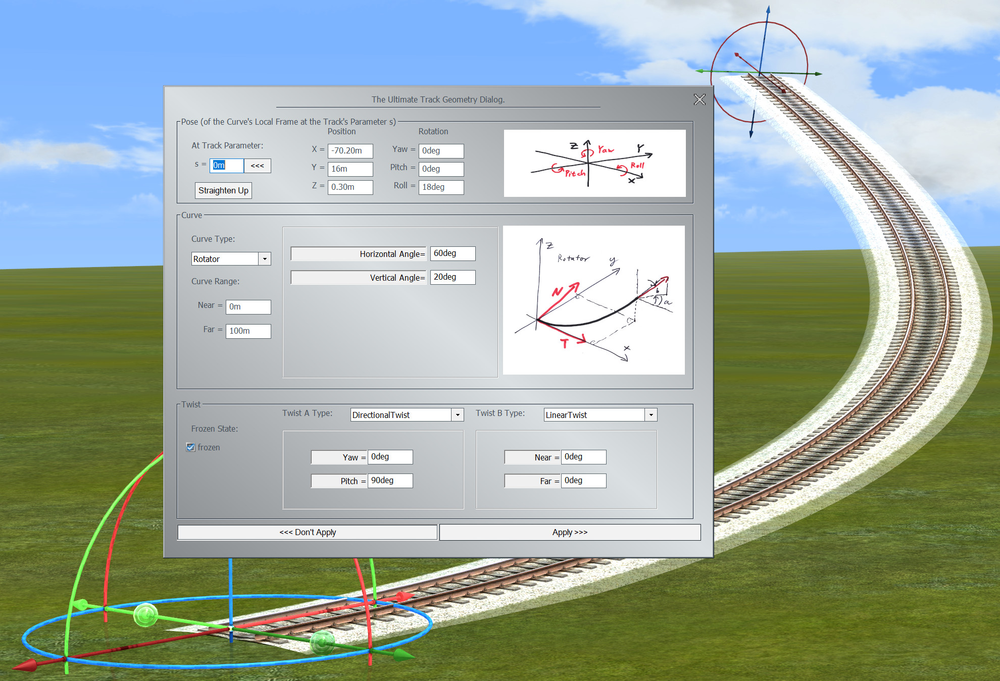

"I'm on a plain
I can't complain"
- Kurt Cobain
The complexity of total track geometry (see Chapter4) provides a challenge: how do we equip a user with means and tools to sculpt a track? After much experience on watching people messing around with curves and twists, my first recommendation would be: Don't! Try to provide complete and finished railroad systems for end-users or follow a model-railroading approach by supplying prefabricated, fixed track pieces that snap together when the user moves the trackends near to each other. And if you really love yourself, you'd stay on a plain. That helps reduce complexity a great deal. For the sadistic, the masochistic and the brave - all those who entertain a special relationship with pain - the rest of this appendix is written. After all, someone has to shape the tiles you provide for your end users. And maybe you want to provide that poor soul with an editor.
The first idea of course is to do everything in code. The trax interface together with the spatial libary and the dimensionated values is the API for that. In the same way you are encouraged to use the dimensionated values, I encourage you to use the spatial library. Not just using it but thinking its way: if you ever feel tempted to split your Position<> or Vector<> into three parameters to compute them separately - something is wrong with your thinking (or there is an omission or a bug in the library). We deal with positions and directions and velocities and forces as being entities in (the real) three dimensional space and every calculation from them will produce results to be so, too. Those calculations do not depend on the frame of reference. They would work in any. That fact is often obscured by two things:
With 'dialog' we refer to a form that allows the user to view and change numerical values directly. It is called 'dialog', most probably because in early computing times such numbers were asked by some question and answere game from the user - what couldn't have worked (see Appendix F). That for sure is not the most fun way to shape a track. Nevertheless, I recommend to have such a dialog in your toolbox. The brave might want to enter precomputed values, the masochistic want to find a bug elsewhere in the software and the sadistic will have proof to complain on the service hotline.
What is important with a dialog is to not try simplify it. You have to provide access to the whole set of variables that define a track. There must not be no hidden variables that influence the track's geometry. Also redundant variables should be avoided at all cost. Values are only alowed to change by direct user input, or when the user triggers a special function like e.g. creating a new control point or 'straighten up' the track. Necessary to say, all the variables have to show the track's actual values: a dialog works best, when the user can see his changes immediately impact the real track.
Only use the built in text types for your system's edit boxes. Use the dimensionated value's streaming and sto features to translate to and from text. Thereby you'll get units displayed to and entered from the user. Special values like infinity or pi will also show up.
Here is a proposal for such a track dialog:
The dialog divides into three sections: the general pose of the cuve's local frame at track's s in global space, the curve and the twist.
On top we have the settings for the general pose - position and orientation - of the track, without applying the twist. For that we need a reference point on the track, which is given by the parameter value 's'. This parameter runs from 0m, meaning the start of the track, up to the maximum value of Track.Length(), which is the end of the track. That very point, oriented along the track, without its twist, is positioned in space by the position section to the right, and oriented by the orientation to the far right.
The position is given by its cartesian X/Y/Z coordinates in global space. The orientation is given by the Yaw/Pitch/Roll angles used in aviation[1]. The reference here is the world's X-axis: for a Yaw of 0deg, a Pitch of 0deg and a Roll of 0deg, the track at parameter s would run along this axis. The rotations follow the right-hand-rule: for the Yaw grab the Z-Axis by the right hand with the thumb pointing in positive Z direction, then rotate the way the four fingers point. For the Pitch rotate around the negative Y-Axis (after it is rotated by Yaw), and then roll around the rotated X-Axis.
Many cuves are defined by their inner geometry without reference to the global space. E.g. an Arc can be defined by its radius only, a Helix needs a radius and a slope. For these kind of curves we need an agreement about how to orient them in global space. For that we define a local curve's frame at a point along its path that is to be aligned to the Pose's values. This frame we define with its origin in the respective point, the X-Axis pointing along the curve's tangent, the Y-Axis pointing along the curve's normal and the Z-Axis pointing along the curve's binormal. The normal is the direction of the curve's main curvature, the binormal is orthogonal on both (see Chapter 3). This frame might be somewhat unconventional and lead to tracks like e.g. a Helix or a Rotator beeing tilted compared to their usual representation (the usual representation is shown in the dialog by the curve's image). To find the angles that bring that curves in their 'upright' position in global space, the 'Straighten Up' button is provided.
The second section deals with the curve of the track. The curve will show up with an image and will provide a minimal set of parameters to shape its form. The Near and Far parameters specify, which part of a curve should make up the track shape. The Near value specifies the track's start and the Far value its end as a parameter value along the curve. The parametrization of the curve can be seen from the image: typically the curve starts at 0m in the origin and develops roughly in X-direction for positive parameters. Curves that use control points start with the first control point.
The combo box 'Curve Type' provides a list of curves to choose from. If a different curve is selected, the dialog tries to find a most similar shape in the new curve's reach. Some curve types like Cubic or Spline allow for pretty impressing approximations, some other, like Line, don't.
Some curves are defined by control points. These points and if applicable their tangents are defined in global coordinates. The dialog provides buttons to select through all the control points, to delete some and to add new ones. Other then for curves completely defined by their inner geometry, changes might affect the track's pose and twist (if frozen), since any 'realignment' of the curve would also immediately change all the control points.
The third section deals with the twist of the track. A twist is a rotation around the curve's tangent according to the right-hand-rule, to bring the upside of the track to a certain direction. The total twist is defined by two single twists, typically one DirectionalTwist to bring the track up and one LinearTwist to define a banking relative to the global up direction. If a track is rotated, this direction would not change. If the track is meant to keep its shape on rotations, the Frozen check box needs to be checked. If there is no dynamic twist defined, the frozen state has no effect.
At the bottom of the dialog we have the buttons: 'Apply' and 'Don't Apply' to accept or reject the changes and close the dialog.
s: The parameter along the track that denotes the point, that is to be located and orientated according to the frame values on the right. The orientation is understood as the curve's orientation in that point, prior to the twist rotation.
Lock Pose Button: Lock the pose on changing s (<<<); this will apply the values to the track at parameter s. Or unlock (>>>); this will retrieve the values at position s from the track.
Position: Position of the point at s on the track with respect to the global space.
Orientation: Rotation of the untwisted track around the Z-Axis,Y-Axis,X-Axis (Yaw,Pitch,Roll), following the right-hand-rule in global space.
Straighten Up: Curves that are defined by their inner geometry are aligned to the Pose by their local frame. Hit the button to rotate them in an upright position according to the way, the curves are depicted in the images on the right of this dialog.
Curve Type: Change the geometry of the curve to a different curve type. It is tried to approximate the original's shape best as possible.
Near: Point on the curve to align with the track's start at s == 0m.
Far: Point on the curve to align with the track's end. The track's length is abs(Far - Near).
Frozen: If the track is meant to keep its shape on rotations, the Frozen check box needs to be checked. If there is no dynamic twist defined, the frozen state has no effect.
Twist A Type: First from two twist types to combine. Both twists will be added to form the total twist.
Twist B Type: Second from two twist types to combine. Both twists will be added to form the total twist.
Don't Apply: Discard all changes, return to the original track and close this dialog.
Apply: Accept all changes and close this dialog.
To get started with the dialog, a couple of tutorials might be helpful.
Tutorial One: creating a straight track. If you put a track on the map in 2D view, you already own a straight track of 60m length.
The dialog pops up with a Line as curve selected, but the area in the middle is empty. The Line is 'The Curve', it does not need any parameters. If you say 'Curve', you get 'Line'. A Line has curvature k == 0, torsion t == 0. Everywhere. But how to get a longer track?
The curve's parameter starts at the origin as can be seen from the image. The part from 0m up to 100m is now mapped to the track and the track can be seen to be significantly longer. The track's parameter now runs from 0m to 100m.
The track now became shorter, but looks like as if it wasn't shortened from the start, but again from the end. That impression is wrong: the Pose section dictates the track's point with parameter s pose in space. The position of it has not changed and the start of the track is always at 0m. So the whole track got shifted to the left.
The track now is twisted in itself. The end of it is rotated by 90deg around the curve's tangent. The 'Twist' is a rotation around the curve's tangent; typically it is composed of a 'Directional Twist' that rotates the track's upside up, no matter what the curve's own idea of up is, and a 'Linear Twist', that allows the user to bank the track. If the track is frozen, the directional twist's attractor vector is understood to always be local to the curve. Meaning, no matter what the track is rotated, the relationship between attractor and curve is fixed in the frame shown in the curve type's image. If the twist is not frozen, the attractor is always global. In this case a pitch of 90deg will mean the world's up.
Tutorial Two: creating a right Arc. After putting a track on the map in 2D view, we mutate it into a different curve than a Line by selecting another curve type from the combo box in the Curve section of the dialog.
An arc is created that bends to the left. The image now shows the principal layout of an arc, which is a part of a circle. The only defining parameter for an arc is its radius and it was set to 100m. But how do we make the arc bend to the right? One idea might be to have a negative radius, but there is no such thing. After all the main radius of any 3D curve at a certain point is calculated from its curvature k: r = 1/k. For a straight Line k is zero, and in 3 dimensions there is no such thing as a 'negative curvature'.
The track bends to the right, but it is upside down. This is exactly, what the Pose's parameters say to happen for the Arc's upside. Here our twist comes into play. You can either switch the attractor to -90deg, or have your linear twist rotate the track's upside by 180deg on both ends.
Tutorial Three: creating a right Rotator. A Rotator is a curve with two angles that govern the development of the curve. Other than the radius of an Arc these angles very well can be negative.
The track does not look like a Rotator. It is twisted in itself and crouches somewhat on the plane. This is, because the pose settings place the curve prior to any twist, so that its local TNB frame at s(track) alignes with the global frame defined by pose. In the Rotator's image, you see that the N vector at s == 0 is pointing somewhat up in the x/z plane. This vector is aligned to the global y-axis. To have a curve standing upright in the sense it is depicted in its image, you have to
Now there is a 'Roll' about 18deg and the Rotator looks like its conventional upright appearance.
Now we have a Rotator that rotates to the right. The curve itself was rotated back to the left, but a 162deg Roll counters that.
A map is a 2-dimensional representation of the track geometry, typically being a projection on the 'plain', locally defined by the earth's surface.
Gizmos are visual representations in 3D projections (on-screen or on VR) of tools to manipulate special track properties.
It seems to be a lucid idea to sculpt a track in three dimensions. Especially if you decided to deal with three dimensional track shapes anyway. It is a WYSIWYG approach. But there is a problem if you do not have a 'real' railroad, but the three dimensional rendering is the final outcome. It gets - let's say - very flat. No matter the colors, no matter the sound, no matter 3D; even VR-glasses would not help. If your software is a planning tool for building railroad systems, there is no problem here, but for making a three dimensional railroad world immersive, this is contraproductive.
If the user is able to push and bend the tracks around they will seem not to be made from steel but rather rubber. Horrible to say, if you let the user move tons heavy locomotives by drag and drop with the effort of an index finger pushing a mouse button: they become toys.
I always found it more immersive to present the user with a construction tool that is very different from the final rendering. People tend to refuse dealing with more than two realities at the same time. So if you present them with a map and the final three dimensional rendering side by side, they are already engaged with two realities and they forget completely the third, most boring reality. [2]
Which is them sitting in front of a computer's screen - consider yourself warned.